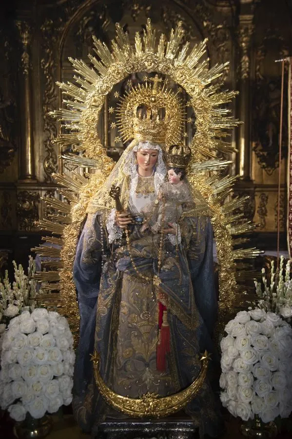
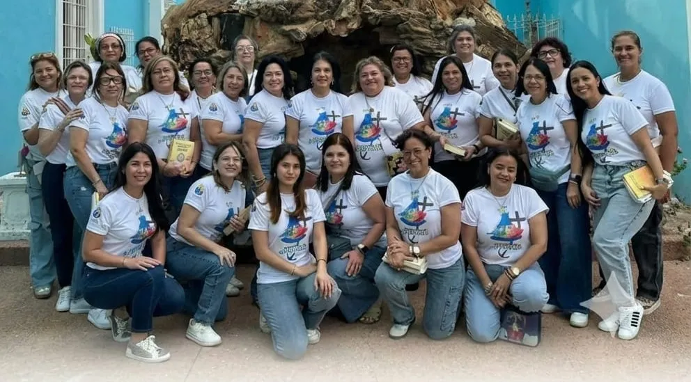
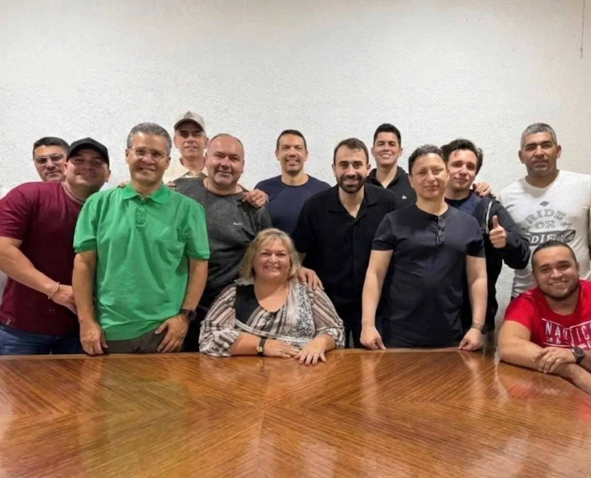
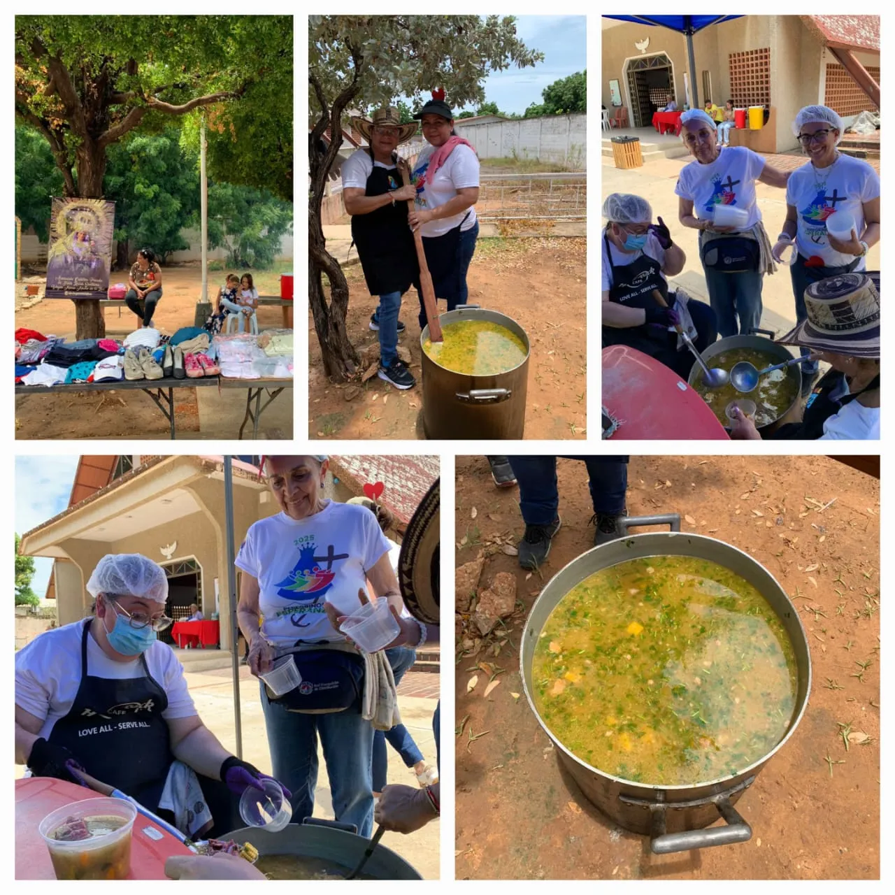

Asociación Católica Privada de Fieles Laicos
"Santísima Virgen María Madre de la Luz"
Nuestra asociación nace con el profundo deseo de llevar la luz del Evangelio a todos los rincones de nuestra comunidad, fomentando un conocimiento vivo y transformador de Cristo.
Todo nuestro apostolado está abrazado por una tierna devoción mariana y se nutre del estudio de la Biblia y la caridad para con los más necesitados.


Rama Femenina. Mujeres dedicadas a la devoción mariana y el sostenimiento espiritual de nuestra labor.

Rama Masculina. Hombres dedicados al estudio profundo de la Biblia y el crecimiento en la fe.

Obras de Misericordia. Iniciativa caritativa para saciar el hambre de los más vulnerables en diversos sectores.
Jueves - 5:00 PM
Martes - 5:00 PM
Fechas y lugares confirmados para nuestras próximas jornadas:
Si deseas formarte sólidamente en tu fe católica, estudiar la Biblia y poner tus manos al servicio de la misericordia a través de las Ollas de la Luz, te damos la bienvenida.
Quiero participar →